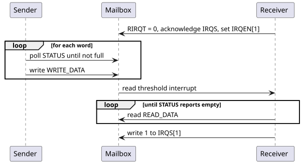

1. SEP & SMC Common Blocks and Communication
1.1. Global Aperture and Address Remapping
During early boot, before other chiplets access SEP or SMC resources, program
the global apertures to match the chiplet’s assigned system address map: SEP
SEP_GLOBAL_BASE_ADDR and SEP_REGION_SIZE, and SMC GLOBAL_BASE and
REGION_SIZE. Both region sizes reset to 16 MiB. The apertures of different
chiplets must not overlap, and the hardware does not derive them from the
chiplet ID: any chiplet-ID-based assignment is platform policy that firmware
implements. The chiplet ID and chiplet BAR are available in SMC registers.
Issue a fence between programming these routing registers and later MMIO
accesses that depend on them. The surrounding system must use the same
assignments when it accesses the subsystems.
The SEP has sixteen and the SMC eight alias remap regions, each with an input
range, an output offset and an AxCACHE value that replaces the transaction’s
own on a hit. They are invalid out of reset and pass traffic through unchanged
until programmed, so local resources are reached at their local alias addresses
(SMC 0xC000_0000) until then. Program the range, offset and AxCACHE of each
region before relying on its translation or cacheability.
The SMC output fabric has separate Machine-mode and Xvisor remap regions,
selected by the address window a request targets rather than by its privilege.
A region with REGION_ATTRS.valid clear passes accesses through unchanged; set
valid once its offset is programmed to remap through it.
On the SEP outbound path, shared resources are reached through the AP- or
STEE-controlled remappers, which external software programs, and private
memory and system MMIO through the direct SMN path. Both remappers replace the
AxUSER source ID with OTHERS, and the secure DMA drives OTHERS as well. The
outbound filter checks the source ID after remapping, so configure it to keep
OTHERS traffic away from M-mode assets, and restrict the STEE remapper to
STEE access in the inbound filter.
1.2. AXI Inbound/Outbound Filters
SEP and SMC both gate their inbound and outbound AXI traffic through the common AXI filter block. AXI filtering uses a match then permit algorithm to determine which filter configuration entry an inbound/outbound transaction matches, and whether that filter entry permits the operation to take place. If the transaction does not match any filter entry, the transaction is denied and terminated in the default case, with the exception of the SMC outbound filter which is permit-by-default.
An AXI filter entry consists of an address range described by the START_ADDR
and END_ADDR registers, and a configuration in FILTER_CONFIG, describing
the transaction types that are permitted for the address range.
A filter entry must be enabled by setting the entry_enabled (bit 4) field.
Filter entries with this bit unset do not participate in the match then permit
algorithm.
Each filter entry can be locked by setting the locked (bit 63) field in
the FILTER_CONFIG register, preventing further modification.
The allow_burst (bit 24) field controls whether AXI burst transactions are
permitted to the address range. If this field is set, the address rounding
granule is increased from 8 bytes to 4 KiB.
See AXI Traffic Filter for more details on the match then permit algorithm, address granule rules, and blocked transaction behavior.
| Component | Direction | Behavior on unmatched traffic | Bypass |
|---|---|---|---|
SEP |
Inbound |
Blocked |
Only while SEP debug is enabled. |
SEP |
Outbound |
Blocked |
Never |
SMC |
Inbound |
Blocked |
Never |
SMC |
Outbound |
Permitted |
Never |
The SMC outbound AXI filter differs from the SMC inbound and the SEP inbound and
outbound filters in that unmatched traffic is permitted rather
than blocked. In this case, the filtering configuration behaves as a deny-list
rather than an allow-list. To deny outbound access to a memory region from the
SMC, a matching filter entry must be created that does not have the
read_allowed (bit 0) or write_allowed (bit 1) fields set in the filter’s
corresponding FILTER_CONFIG register.
Most SMC instances block all inbound traffic out of reset, so firmware must configure the inbound policies during cold boot. When programming entries:
-
Program the most specific policy at the lowest index and the broader fallback above it. The lowest-numbered matching entry decides: if its permission bit is clear, the access is blocked without examining later entries.
-
An entry matches one security state only (
allow_nsselects non-secure). Covering both secure and non-secure accesses to one range takes two entries; a mismatchedallow_nsdoes not deny, it only fails to match. -
Size protected regions in whole granules: 8 bytes, or 4 KiB with
allow_burst. A range is widened outward to granule boundaries, so preferallow_burst = 0for an object smaller than 4 KiB. -
Do not trust read-back as the effective range. Hardware writes the widened values back only when both ends fall in the same granule; otherwise read-back returns the programmed values while matching still widens them.
-
Do not set
allow_burston a SEP inbound entry that covers a register region: register regions accept single-beat accesses only.
The following C code examples demonstrate configuring an AXI filter to permit (SEP inbound, SEP outbound, SMC inbound) or deny (SMC outbound) external AXI requests.
1.2.1. Example
// AXI Filter register addresses.
// In SEP-local address space.
#define SEP_FILTER_OUTBOUND_BASE 0x10A20000
#define SEP_FILTER_INBOUND_BASE 0x10A21000
// In SMC-local address space.
#define SMC_FILTER_INBOUND_BASE 0xC0015000
#define SMC_FILTER_OUTBOUND_BASE 0xC0016000
#define FILTER_ENTRY_BASE(base, i) ((base) + (i) * 0x20)
#define FILTER_CONFIG_LO(base, i) (FILTER_ENTRY_BASE((base), (i)) + 0x0)
#define FILTER_CONFIG_HI(base, i) (FILTER_ENTRY_BASE((base), (i)) + 0x4)
#define FILTER_START_ADDR_LO(base, i) (FILTER_ENTRY_BASE((base), (i)) + 0x8)
#define FILTER_START_ADDR_HI(base, i) (FILTER_ENTRY_BASE((base), (i)) + 0xC)
#define FILTER_END_ADDR_LO(base, i) (FILTER_ENTRY_BASE((base), (i)) + 0x10)
#define FILTER_END_ADDR_HI(base, i) (FILTER_ENTRY_BASE((base), (i)) + 0x14)
// AXI Filter register constants.
#define FILTER_CFG_READ_ALLOWED 0x1
#define FILTER_CFG_WRITE_ALLOWED 0x2
#define FILTER_CFG_ENTRY_ENABLED 0x10
#define FILTER_CFG_ALLOW_NS 0x100
#define FILTER_CFG_SRC_ID(x) (((x) & 0xF) << 16)
#define FILTER_CFG_ALLOW_BURST 0x1000000// Using SEP inbound filter entry `i`,
// open address range [`start`, `start` + length`] to
// inbound secure and single-beat transactions only.
// Note that `start` will be rounded down to be 8B-aligned,
// and `start` + `length` will be rounded up to be 8B-aligned.
void sep_inbound_filter_open_range(uintptr_t start, size_t length, uint8_t i) {
// Clear the filter configuration, disabling the entry.
write32(FILTER_CONFIG_LO(SEP_FILTER_INBOUND_BASE, i), 0);
// Make sure the write has committed.
asm volatile("fence" ::: "memory");
uintptr_t end = start + length;
write32(FILTER_START_ADDR_LO(SEP_FILTER_INBOUND_BASE, i),
(uint32_t)start);
write32(FILTER_START_ADDR_HI(SEP_FILTER_INBOUND_BASE, i),
(uint32_t)(start >> 32));
write32(FILTER_END_ADDR_LO(SEP_FILTER_INBOUND_BASE, i),
(uint32_t)end);
write32(FILTER_END_ADDR_HI(SEP_FILTER_INBOUND_BASE, i),
(uint32_t)(end >> 32));
// Make sure the write has committed before enabling the entry.
asm volatile("fence" ::: "memory");
uint32_t config_lo = FILTER_CFG_READ_ALLOWED | FILTER_CFG_WRITE_ALLOWED
| FILTER_CFG_ENTRY_ENABLED;
write32(FILTER_CONFIG_HI(SEP_FILTER_INBOUND_BASE, i), 0);
// Make sure the write has committed before enabling the entry.
asm volatile("fence" ::: "memory");
write32(FILTER_CONFIG_LO(SEP_FILTER_INBOUND_BASE, i), config_lo);
}
// Using SMC inbound entry `i`,
// open address range [`start`, `start` + `length`] to
// inbound secure single-beat or burst transactions.
// Note that `start` will be rounded down to be 4KiB-aligned,
// and `start` + `length` will be rounded up to be 4KiB-aligned.
void smc_inbound_filter_open_range_burst(uintptr_t start, size_t length, uint8_t i) {
// Clear the filter configuration, disabling the entry.
write32(FILTER_CONFIG_LO(SMC_FILTER_INBOUND_BASE, i), 0);
// Make sure the write has committed.
asm volatile("fence" ::: "memory");
uintptr_t end = start + length;
write32(FILTER_START_ADDR_LO(SMC_FILTER_INBOUND_BASE, i),
(uint32_t)start);
write32(FILTER_START_ADDR_HI(SMC_FILTER_INBOUND_BASE, i),
(uint32_t)(start >> 32));
write32(FILTER_END_ADDR_LO(SMC_FILTER_INBOUND_BASE, i),
(uint32_t)end);
write32(FILTER_END_ADDR_HI(SMC_FILTER_INBOUND_BASE, i),
(uint32_t)(end >> 32));
// Make sure the write has committed before enabling the entry.
asm volatile("fence" ::: "memory");
uint32_t config_lo = FILTER_CFG_READ_ALLOWED | FILTER_CFG_WRITE_ALLOWED
| FILTER_CFG_ALLOW_BURST
| FILTER_CFG_ENTRY_ENABLED;
write32(FILTER_CONFIG_HI(SMC_FILTER_INBOUND_BASE, i), 0);
// Make sure the write has committed before enabling the entry.
asm volatile("fence" ::: "memory");
write32(FILTER_CONFIG_LO(SMC_FILTER_INBOUND_BASE, i), config_lo);
}The same entry fields express other policies. A secure-only inbound entry
(allow_ns = 0 with the required read/write permissions) leaves non-secure
traffic to the inbound default, which blocks it; make sure no other entry
permits it. On the SMC outbound filter the same entry does not block non-secure
traffic, because unmatched traffic passes; add matching deny entries for it,
accounting for entry priority. AXI-Lite filters check AxPROT instead: with
awprot_requirement and arprot_requirement at 0x1 (data, secure,
privileged) and both write_filter_enable and read_filter_enable set, only
transactions whose three PROT bits equal 0x1 are allowed.
|
The hardware places no constraints on the order in which register writes are executed. This means ordinary writes that modify the address range and permissions risk temporarily opening up a wider access window before the new access permissions are committed. The code examples above guard different steps of configuring the
filter with |
1.3. Mailboxes
The SEP and SMC contain mailbox instances which can be used for message-passing
between other cores on the SMC, the SEP and the SMC, as well as the Application
Processors and the SEP or SMC. Mailboxes consist of a read and write FIFO,
exposed through the READ_DATA and WRITE_DATA registers respectively.
FIFO messages consist of 64-bit data words.
Interrupts can optionally be enabled to fire whenever the number of data words
in the read FIFO, or in the write FIFO, is strictly greater than the configured
threshold. The write threshold therefore reports words still queued for the
peer, not that the peer has received them. The read and write fill level
thresholds are configured in the RIRQT and WIRQT registers respectively.
Individual interrupt conditions can be enabled by setting bits in the IRQEN
register.
Observe these rules when using a mailbox:
-
Assign one software producer and one consumer per direction, or serialize shared access; the register interface does not allocate FIFO ownership.
-
Before sending, check the write-full status, then write
WRITE_DATA. HandleSLVERRif another writer consumed the space in between. -
Before receiving, check the read-empty status, then read
READ_DATA. Each successful read consumes one word, and the status and data accesses are not one atomic operation. -
Read
ERROR_FLAGSonce to capture access errors, then acknowledgeIRQS[2]separately if it was set. Avoid diagnostic reads that consume data or clear error information. -
To be interrupted on any available data, program
RIRQT = 0, acknowledge old status, and enableIRQEN[1]. Drain received words before acknowledgingIRQS[1], since a remaining live condition sets it again. -
Coordinate FIFO flushes with the peer: a flush discards words already queued for it.
-
On the SEP, keep the mailbox aperture marked side-effect in
mrac. Clearing it enables load-to-load forwarding and speculative accesses, which pop entries unpredictably.

|
The SEP and Key Manager address maps contain a separate mailbox for communication between each other. The SEP to KM mailbox implements a different register interface from the SEP to SMC mailbox register interface described here. |
|
As the SEP CPU implements the 32-bit RV32 architecture and the mailbox data registers are 64-bits wide, SEP reads from the mailbox discard the upper/lower half of the popped data, and SEP writes to the mailbox write zeroes to the half of the data register not written. When communicating between the SMC and the SEP through the mailbox, only one 32-bit half of each entry should be used, and the choice must be agreed on by the software of both components. |
// Mailbox register addresses.
// In SMC-local address space.
#define MAILBOX_BASE 0xC0018000
#define MAILBOX_OUTBOUND_BASE(i) (MAILBOX_BASE + ((i) * 0x1000) + 0x0)
#define MAILBOX_INBOUND_BASE(i) (MAILBOX_BASE + ((i) * 0x1000) + 0x800)
#define MAILBOX_REG_WRITE_DATA(i) (MAILBOX_OUTBOUND_BASE(i) + 0x0)
#define MAILBOX_REG_OUTBOUND_STATUS(i) (MAILBOX_OUTBOUND_BASE(i) + 0x10)
#define MAILBOX_REG_READ_DATA(i) (MAILBOX_INBOUND_BASE(i) + 0x8)
#define MAILBOX_REG_INBOUND_STATUS(i) (MAILBOX_INBOUND_BASE(i) + 0x10)
#define MAILBOX_REG_INBOUND_RIRQT(i) (MAILBOX_INBOUND_BASE(i) + 0x28)
#define MAILBOX_REG_INBOUND_IRQS(i) (MAILBOX_INBOUND_BASE(i) + 0x30)
#define MAILBOX_REG_INBOUND_IRQEN(i) (MAILBOX_INBOUND_BASE(i) + 0x38)
// Mailbox register constants.
#define MAILBOX_STATUS_EMPTY 0x1
#define MAILBOX_STATUS_FULL 0x2
#define MAILBOX_IRQ_WTIRQ 0x1
#define MAILBOX_IRQ_RTIRQ 0x2
#define MAILBOX_IRQ_EIRQ 0x4// Send a message through mailbox `i`.
void mailbox_send(uint8_t i, uint32_t message) {
// Poll until the outbound FIFO has space.
while (read32(MAILBOX_REG_OUTBOUND_STATUS(i)) & MAILBOX_STATUS_FULL);
write32(MAILBOX_REG_WRITE_DATA(i), message);
}
// Enable and configure the read threshold interrupt on
// mailbox `i` to signal when there are any messages
// pending in the FIFO.
void mailbox_configure_read_threshold_interrupt(uint8_t i) {
write32(MAILBOX_REG_INBOUND_RIRQT(i), 0);
write32(MAILBOX_REG_INBOUND_IRQEN(i), MAILBOX_IRQ_RTIRQ);
}
// Handle the read threshold interrupt by handling each message
// in the FIFO and acknowledging the interrupt once empty.
void mailbox_handle_read_threshold_interrupt(uint8_t i) {
// While the inbound port is not empty,
// pop messages and handle them.
while (!(read32(MAILBOX_REG_INBOUND_STATUS(i)) & MAILBOX_STATUS_EMPTY)) {
uint32_t message = read32(MAILBOX_REG_READ_DATA(i));
// Handle the message here...
(void) message;
}
// Acknowledge the receive threshold interrupt,
// clearing the interrupt pending bit.
write32(MAILBOX_REG_INBOUND_IRQS(i), MAILBOX_IRQ_RTIRQ);
}1.4. Reference Counter
The SEP and SMC each expose a free-running 64-bit REFERENCE_COUNTER in their
CPU control block, counting the always-on reference clock from reset. To reload
it, write one value at a time: write the new value, then poll
REFERENCE_COUNTER until the readback is at or just above the written value
before issuing the next write. Compare against a window above the written value
rather than for equality, since the counter advances while the poll runs. Where
the written value is too close to the free-running count to tell the two apart,
separate consecutive writes by at least eight reference-clock periods instead.
// SMC CPU control register address.
// In SMC-local address space.
#define SMC_CPU_CTRL_REG_REFERENCE_COUNTER 0xC0039040
// Load `value` into the reference counter. `window` is the largest
// number of reference-clock periods that can elapse while polling.
void reference_counter_load(uint64_t value, uint64_t window) {
write64(SMC_CPU_CTRL_REG_REFERENCE_COUNTER, value);
// Wait until the readback is at or just above `value`.
while (read64(SMC_CPU_CTRL_REG_REFERENCE_COUNTER) - value > window);
}